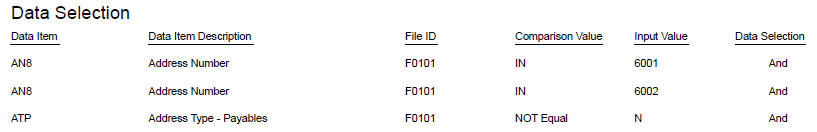
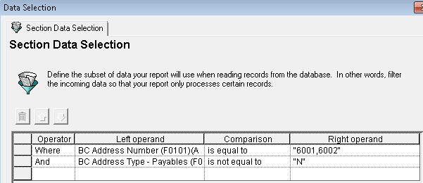
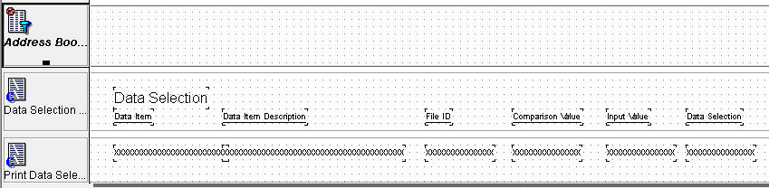

How to print runtime data selection of Driver section in current or another report
Before Start
Simplified routine
Example of output

Example of Selection

Example of report template

Example of Implementation
Detail code is exposed to explain the business function used below for demonstration only
*** Break In Code ***
***********************************************************************
GLOBALS: Variables (Global)
***********************************************************************
rpt_szMachineKey_MKEY
rpt_mnJobnumber_JOBS
rpt_idCacheCursor_GENID
rpt_szErrorID_DTAI
rpt_cColumnHeadingPrint_EV01
rpt_cDataSelectionPrint_EV01
rpt_idPPATMessages_GENLNG
=======================================================================
SECTION: Address Book, Full View [COLUMNAR SECTION] (S2)
=======================================================================
OBJECT: SECTION
EVENT: Initialize Section
-----------------------------------------------------------------------
// add data selection via ER Set User Selection
Set Selection Append Flag(<Yes>)
Set User Selection(BC Search Type (F0101)(AT1), <Equal To>, "E", <And>)
//
// The following code is to Load the UBE Data Selection
Get Local Computer ID ** B9800181_GetLocalComputerId
VA rpt_szMachineKey_MKEY <- BF szMachineKey
Get Internal Next NUmber ** B0000564_GetInternalNextNumber
VA rpt_mnJobnumber_JOBS <- BF mnJobnumberA
UBE Retrieve Data Selection ** B4309570_UBERetrieveDataSelection
SL VersionName -> BF szVersion
SL ReportName -> BF szProgramId
<Zero> -> BF cMode
VA rpt_szMachineKey_MKEY -> BF szComputerID
VA rpt_mnJobnumber_JOBS -> BF mnJobnumberA
SL SectionNumber -> BF mnSectionID
-----------------------------------------------------------------------
EVENT: Do Section
-----------------------------------------------------------------------
// To print values only once - so it will be set 1 after printing it
If VA rpt_cDataSelectionPrint_EV01 is not equal to "1"
Do Custom Section(RS Data Selection Query)
End If
//
If VA rpt_cColumnHeadingPrint_EV01 is not equal to "1"
Do Custom Section(RS Print Columns)
End If
-----------------------------------------------------------------------
EVENT: End Section
-----------------------------------------------------------------------
// Termiate Data Selection Cache
UBE Retrieve Data Selection Cache ** B4302450_UBERetrieveDataSelectionCache
"8" -> BF szCacheActionCode
VA rpt_szErrorID_DTAI <- BF szErrorMessageID
VA rpt_idCacheCursor_GENID <> BF idCacheCursor
VA rpt_mnJobnumber_JOBS -> BF mnJobnumberA
VA rpt_szMachineKey_MKEY -> BF szComputerID
=======================================================================
SECTION: Data Selection Query [GROUP SECTION] (S3)
=======================================================================
OBJECT: SECTION
EVENT: End Section
-----------------------------------------------------------------------
// Read all cache loaded at Initialized Section event
// So when there is no more cache error 078M is to be issued to stop loop
UBE Retrieve Data Selection Cache ** B4302450_UBERetrieveDataSelectionCache
"6" -> BF szCacheActionCode
"2" -> BF mnNumberKeys
"1" -> BF cSuppressErrorMessage
VA rpt_szErrorID_DTAI <- BF szErrorMessageID
VA rpt_idCacheCursor_GENID <> BF idCacheCursor
VA rpt_mnJobnumber_JOBS -> BF mnJobnumberA
VA rpt_szMachineKey_MKEY -> BF szComputerID
RV Comparison <- BF szCompareValue
RV DataSelection <- BF szAndOr
RV DataItem <- BF szDataItem
RV FileID <- BF szTable
RV InputValue <- BF szValue
While VA rpt_szErrorID_DTAI is equal to or empty <Blank>
// (Optional) To describe description of column
Retrieve Data Dictionary Alpha Desc ** B9200002_GetDDAlphaDescription
RV DataItem -> BF szDataItem
RV DataItmDes <- BF szDescriptionAlpha
Do Custom Section(RS Print Data Selection)
// To read next row
UBE Retrieve Data Selection Cache ** B4302450_UBERetrieveDataSelectionCache
"6" -> BF szCacheActionCode
"2" -> BF mnNumberKeys
"1" -> BF cSuppressErrorMessage
VA rpt_szErrorID_DTAI <- BF szErrorMessageID
VA rpt_idCacheCursor_GENID <> BF idCacheCursor
VA rpt_mnJobnumber_JOBS -> BF mnJobnumberA
VA rpt_szMachineKey_MKEY -> BF szComputerID
RV Comparison <- BF szCompareValue
RV DataSelection <- BF szAndOr
RV DataItem <- BF szDataItem
RV FileID <- BF szTable
RV InputValue <- BF szValue
End While
// Not to print it again
VA rpt_cDataSelectionPrint_EV01 = "1"
// Terminate cache which is already printed
UBE Retrieve Data Selection Cache ** B4302450_UBERetrieveDataSelectionCache
"8" -> BF szCacheActionCode
VA rpt_szErrorID_DTAI <- BF szErrorMessageID
VA rpt_idCacheCursor_GENID <> BF idCacheCursor
VA rpt_mnJobnumber_JOBS -> BF mnJobnumberA
VA rpt_szMachineKey_MKEY -> BF szComputerID
*** Break In Code ***